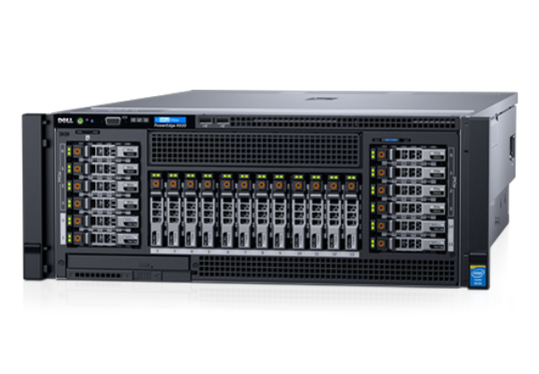

# Build a # Smart Camera # with Nerves ---- ElixirConf US - 2019-08-28 Greg Mefford  <!-- .element: class="plain" style="height: 6em" -->
# Thanks, Bleacher Report!  <!-- .element: class="plain" style="height: 10em" -->  <!-- .element: class="plain" style="height: 10em" -->
# Code of Conduct 💜 https://elixirconf.com/2019/policies
# Tentative schedule 🕘 * 8:30 AM - 10:00 AM (1:30) * Welcome / Overview * Pre-Burned Firmware! * Project Overview * Elixir for Embedded * Nerves Concepts * Streaming Video * 10:00 AM - 10:30 AM (0:30) * Break (and help resolve issues)
# Tentative schedule 🕘 * 10:30 AM - 12:00 PM (1:30) * Application Structure * Custom Nerves Systems * Scanning Barcodes * 12:00 PM - 1:30 PM (1:30) * Lunch (and explore Buildroot)
# Tentative schedule 🕘 * 1:30 PM - 3:00 PM (1:30) * GraphQL APIs * Adding Phoenix * Phoenix Channels * GraphQL Subscriptions * 3:00 PM - 3:30 PM (0:30) * Break
# Tentative schedule 🕘 * 3:30 PM - 5:00 PM (1:30) * Recap / Add More Features * Play / Lab time * Other Random Questions? * Deeper Dive on C code? * System Customization?
# For Today * Raspberry Pi Zero W + case * Pi camera v2 * Zero-size camera ribbon cable * Lens adjustment tool * 16 GB class 10 MicroSD card * MicroSD card reader * Male USB to MicroUSB cable * QR codes and Stickers!
# For Later * MicroUSB OTG cable * HDMI to Mini HDMI cable * Standard-size camera ribbon cable * 5V 2.5A MicroUSB AC power adapter * 40-pin header * Heatsink
# Electronics Safety * Touch some grounded metal (like your laptop) * It's technically not fine, but it'll probably be fine * Be gentle with the ribbon cables/connectors
# Eye  <!-- .element: class="plain" style="height: 14em" -->
# Omni Eye  <!-- .element: class="plain" style="height: 14em" --> <br/> [https://github.com/GregMefford/omni_eye](https://github.com/GregMefford/omni_eye)
# Streaming Video with *Picam*  <!-- .element: class="plain" style="height: 13em" --> <br/> [https://github.com/electricshaman/picam](https://github.com/electricshaman/picam) <!-- .element: class="attribution" -->
# Scanning Barcodes with *Zbar*  <!-- .element: class="plain" style="height: 13em" --> <br/> [https://github.com/GregMefford/zbar-elixir](https://github.com/GregMefford/zbar-elixir) <!-- .element: class="attribution" -->
# GraphQL Queries, Mutations # and Subscriptions  <!-- .element: class="plain" style="height: 10em" --> <br/> [Live APIs with GraphQL Subscriptions - Bruce Williams and Ben Wilson](https://youtu.be/PEckzwggd78) <!-- .element: class="attribution" -->
# Phoenix Channels  <!-- .element: class="plain" style="height: 12em" --> Notes: Phoenix Channels also offer a great way to easily connect your devices to a server, whether it's an app running in a browser or a headless sensor device in the field.
# *`nerves_init_gadget`*  <!-- .element: class="plain" style="height: 13em" --> <br/> [https://github.com/nerves-project/nerves_init_gadget](https://github.com/nerves-project/nerves_init_gadget) <!-- .element: class="attribution" -->
# *`nerves_init_gadget`*  <!-- .element: class="plain" style="height: 13em" --> <br/> [https://github.com/nerves-project/nerves_init_gadget](https://github.com/nerves-project/nerves_init_gadget) <!-- .element: class="attribution" -->
# *`nerves_init_gadget`* * Config Ethernet and Serial over USB * DHCP Server * mDNS Responder (`nerves.local`) * Manage Erlang Distribution * `mix firmware.push` over SSH * SSH console to IEx prompt
# Try it on your Device ``` bash $ open http://nerves.local/ # Try scanning a barcode (you may need to reload # the browser page after the device boots fully) $ open http://nerves.local/graphiql # Try running a query like: # query { # config { # size { # width # height # } # } # } ```
# Elixir 💜 Embedded Notes: * At ElixirConf -> don't need convincing. * Let's talk about _reasons_ BEAM is a good choice, * in case hadn't thought about it * or want to explain it to someone else.
# Elixir 💜 Embedded * *BEAM is Embedded-First* * Baked-In Fault-Tolerance * Light-Weight Concurrency * Binary Pattern-Matching * Integrated IoT Platform
# BEAM is *Embedded-First* ## Ericsson *ADX301* 10 Gbps - 160 Gbps Telecom Switch System  <!-- .element: class="plain" style="height: 12em" --> Notes: * Erlang/OTP born as control plane these telecom switches * Scalable total throughout by adding cards and cabinets * The Erlang part is to control all the ASICs on the data path
# BEAM is *Embedded-First* ## Ericsson *ADX301* Erlang/OTP-powered Control Plane  <!-- .element: class="plain" --> Notes: * I wasn't able to find specs on this CPU's speed * I'd guess it's less-powerful than a modern Raspberry Pi * No surprise that we can run powerful embedded systems with Elixir
# Elixir 💜 Embedded * BEAM is Embedded-First * *Baked-In Fault-Tolerance* * Light-Weight Concurrency * Binary Pattern-Matching * Integrated IoT Platform Notes: * OTP brings FT primitives that we don't have to design
 <!-- .element: class="plain fragment" style="height: 14em" --> Notes: * Not what they meant by "let it crash." * (fragment): Crash screens c/o Kevlin Henney * There are plenty more where these came from
# Elixir 💜 Embedded * BEAM is Embedded-First * Baked-In Fault-Tolerance * *Light-Weight Concurrency* * Binary Pattern-Matching * Integrated IoT Platform Notes: * BEAM gives us baked-in concurrency primitives * via processes and message-passing
# Light-weight *concurrency* * Lots of tiny processes * Process-level fault-tolerance <div slye="clear: both" /> <div style="float: left"> <p style="margin-bottom: -18px">4 Cores</p> <img src="img/rpi3.png" class="plain" style="width: 500px" /> </div> <div style="float: right"> <p style="margin-bottom: -18px">96 Cores / 192 Threads</p>  </div> Notes: * Allows us to easily make use of all cores * Whether it's 4 in your Raspberry Pi * Or a bunch of hyper-threaded cores in a server
# Light-weight *concurrency* * Per-Process Garbage-Collection * Immutable Data Structures  <!-- .element: class="plain" style="height: 12em"--> <br/> [Hamidreza Soleimani's Blog - Erlang Garbage Collection Details and Why It Matters](https://hamidreza-s.github.io/erlang%20garbage%20collection%20memory%20layout%20soft%20realtime/2015/08/24/erlang-garbage-collection-details-and-why-it-matters.html) <!-- .element: class="attribution" --> Notes: * In particular, I want to look more closely at these two: * Per-process garbage-collection * Immutable data structures
# Elixir 💜 Embedded * BEAM is Embedded-First * Baked-In Fault-Tolerance * Light-Weight Concurrency * *Binary Pattern-Matching* * Integrated IoT Platform Notes: * Binary pattern-mathing is super-cool for embedded
# Elixir 💜 Embedded *Binary* Pattern-Matching ``` elixir def decode(<<op::3, addr::6, data::7>>), do: {op, addr, data} # ... decode(<<0b01010101, 0b01010011>>) # => {2, 42, 83} ``` Notes: Let's pretend that we have an data sheet for an electronics component that says we need to decode these 16 bits into * a 3-bit operation code, * a 6-bit address value, * and a 7-bit data value. It's really easy to just pattern-match like this, and you're done.
# Elixir 💜 Embedded *Binary* Pattern-Matching ``` elixir def decode(<<0::2, op::1, addr::9, data::4>>), do: # ... def decode(<< op::3, addr::6, data::7>>), do: # ... # ... decode(<<0b00010101, 0b01010011>>) # => {0, 341, 3} decode(<<0b01010101, 0b01010011>>) # => {2, 42, 83} ``` Notes: But oh, by the way, the data sheet also says that if the first two bits are zeros, then you're in "extended address" mode, so you should interpret the rest of the data as: * a 1-bit operation code, * a 9-bit address value, * and a 4-bit data value. No problem, just add another function head. This example is obviously contrived, but it's so nice to be able to do this instead of procedural bitwise operations.
# Elixir 💜 Embedded * BEAM is Embedded-First * Baked-In Fault-Tolerance * Light-Weight Concurrency * Binary Pattern-Matching * *Integrated IoT Platform* Notes: * Elixir is also a great choice for an integrated IoT platform.
# Integrated IoT Platform  <!-- .element: class="plain" style="height: 16em" --> Notes: This is what it looks like when all your embedded devices decide to connect to your server at once.
# Integrated IoT Platform  <!-- .element: class="plain" style="height: 16em" --> Notes: * If you want to, you can build a whole stack using Elixir * On the client and the server side
# Integrated IoT Platform  <!-- .element: class="plain" style="height: 16em" --> Notes: * Using Phoenix and Channels on the back-end * to talk to Elixir and Nerves on a headless device * Or to a JavaScript client running on a kiosk-style device
# Options for Embedding Elixir  <!-- .element: class="plain" --> Notes:
 <!-- .element: class="plain" style="height: 4em"-->  <!-- .element: class="plain" style="height: 4em"-->  <!-- .element: class="plain" style="height: 4em"--> * Well of course that works... * Deployment / Packaging * Administration * Long boot times * Read/Write filesystem Notes:
# GRiSP * Bare-metal BEAM 🤘 * Purpose-built hardware * Real-time  <!-- .element: class="plain" style="height: 14em" --> Notes:
 <!-- .element: class="plain" style="height: 6em" --> Craft and deploy bulletproof embedded software in Elixir Notes:
 <!-- .element: class="plain" style="height: 6em" --> * Minimal Linux with Buildroot * Commodity or custom hardware * BEAM as "operating system" * Read-only filesystem * Firmware artifacts Notes:
# Support for *Lots of Targets*  <!-- .element: class="plain" -->  <!-- .element: class="plain" -->  <!-- .element: class="plain" -->  <!-- .element: class="plain" -->  <!-- .element: class="plain" -->  <!-- .element: class="plain" --> Notes: Nerves currently supports a bunch of popular and readily-available target hardware, like the Raspberry Pi and Beaglebone families, and the Lego EV3, which is really neat.
# Nerves Platform App-level fault-tolerance with *Shoehorn* > Get your boot on! * Configure network * Start management tooling * Format storage partitions * ... Then start your app Notes: We also have Bootloader, which can be used to ensure the device comes up to a known-working state before trying to start your application. This allows for some limited remote diagnostics or firmware update, even if your application fails to start for some reason.
# Nerves Platform App-level fault-tolerance with *Shoehorn* > *Shoehorn* used to be called *Bootloader*. > That was confusing because it's not actually a bootloader.
# Nerves 💜 Elixir ```bash $ mix nerves.new # Start a Project $ mix deps.get # Download Artifacts $ mix firmware # Cross-Compile your Code $ mix firmware.burn # Burn your SD card # ... or ... $ mix firmware.push # Remote Firmware Update ``` <!-- .element style="font-size: 0.7em" -->
# Overwhelmingly # *welcoming* and *helpful* # community  <!-- .element: class="plain" --> Notes: So I decided to focus on building a welcoming and helpful community around Nerves. For example, I started to manually and individually welcome each new person to our Slack channel and invite them to get involved.
Notes: The community has grown a lot. We have over 1500 members in our Slack channel today. I see that as the tip of the iceberg. There are probably many more people that we never hear from because they don't use Slack. We've recently been working on having a stronger presence in other spaces like the Elixir Forum and Stack Overflow so that we can do better at meeting people where they are.
# You *Can* Contribute  <!-- .element: class="plain" style="height: 10em"--> Notes:
# Wanted to *get involved* ## Even though I was *new to Elixir* Notes: I really wanted to get more involved in the Nerves project, even though I was pretty new to Elixir at the time.
# Wanted to *get involved* ## ~~Even though I was new to Elixir~~ ## *Because* I was new to Elixir Notes: And when I thought about it, I realized that I had something to contribute to the project _because_ I was new to Elixir.
# Poncho Project  <!-- .element: class="plain" style="height: 13em" --> <br/> [http://embedded-elixir.com/post/2017-05-19-poncho-projects/](http://embedded-elixir.com/post/2017-05-19-poncho-projects/) <!-- .element: class="attribution" -->
# Poncho Style ``` bash $ mkdir omni_eye && cd omni_eye $ mix new eye --sup $ mix phx.new eye_ui --no-ecto $ mix nerves.new eye_fw --init-gadget ``` <!-- .element style="font-size: 0.8em" --> ``` bash omni_eye ├── eye ├── eye_fw └── eye_ui ``` <!-- .element style="font-size: 0.8em" -->
# *Fake Camera* for Dev and Test ``` elixir # eye/config/config.exs config :picam, camera: Picam.FakeCamera ``` ``` elixir # eye_ui/config/config.exs config :picam, camera: Picam.FakeCamera ``` ``` elixir # eye_fw/config/host.exs config :picam, camera: Picam.FakeCamera ```
# *Real Camera* on Target Device ``` elixir # eye_fw/config/rpi0_zbar.exs config :picam, camera: Picam.Camera ```
# `eye` Application in `iex`  <!-- .element: class="plain" style="width: 95%" -->
# `eye_ui` Application in `iex`  <!-- .element: class="plain" style="width: 1400px" -->  <!-- .element: class="plain" style="width: 1400px" -->